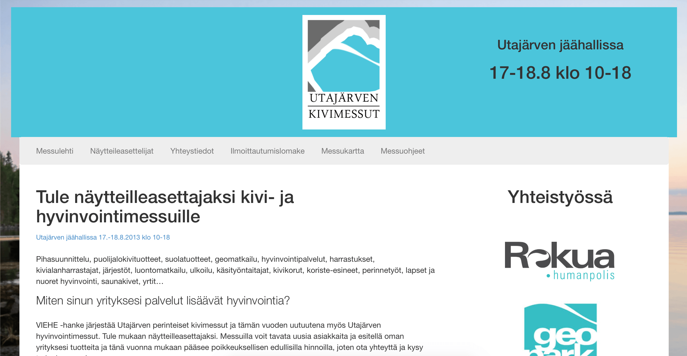

My name is Juuso Haavisto and I live in a small and quite modest town near Oulu, Finland. I mainly program software and build websites, so unless you are a relative of mine you probably found me trough our mutual interest.
I’ve been programming since 2011, when I was on high school’s first grade. After a mere year of real practicing I started a junior achievement company. Basically, I got the chance to run a real company at the age of 17 for a full calendar year, without the usual legal bindings. I was also granted VAT number on request, which legally allowed me to make bills for companies. After this everything was pretty straightforward; go sell yourself, make money and more importantly, learn by doing. At the end of the year, when my company was shut down, I had made a few websites and some not-so-viral software. Below you can find some of my topmost memories of that time.
During the year I worked for many different organizations and people. One of them was a local sports club, to which I made a website muhu.fi. The site is powered by Wordpress and runs a bit modified version of Twitter Bootstrap. Thanks to the latter technology the site is also responsive. Responsive web design is now one of my standards, which this site also endorses.
I also made a website for a local event which was hosted at utajärvenkivimessut.com , which was created using express.js. The site also made use of Twitter Bootstrap and ran both on IDN (utajärvenkivimessut.com) and non-IDN (utajarvenkivimessut.com) domains.

Screenshot of utajärvenkivimessut.com
I also worked with private persons located in Southern Finland, Sweden and US. For them I created software instead of websites. Having not taken a single IT-class in my whole life, I was still able to provide them working products independently with my programming languages of choice; node.js and Go. The software depended on tools and technologies such as headless web browsers, optical character recognition, websockets and various of different API’s and protocols. I successfully delivered competitive products to already saturated markets, which I believe was one of the big eye openers in my so called career so far. When I understood I could actually deliver tools and products even when working all alone, the future career choice of mine came a lot more clear. I started working on open-source software, gone to tryouts of special forces of electronic warfare and did entrance exams to both department of electronic engineering and computer science in my nearest university.
I received some social media recognition from my fellow Finns on Twitter (follow me maybe?), as @mikko, the Chief Research Officer at F-Secure (Finnish anti-virus company) started following me after I tipped him a couple of interesting links. I still get excited that he started following me, as at one point Mikko was the most followed Finn on Twitter. I also find it satisfying that my interest towards security, which started way before programming, was found useful by at least one person.
Speaking of security, during my studies in high school I cracked a locker secured by RSA) manually. The locker did not really belong to anyone, so I did not break any rules. It was intentionally left there by a past student as a mathematical challenge for others. When I on later date met the said student in person, he said that from the three challenge lockers he left after him, he would have predicted the said locker to be the last one solved. He also found it interesting that I had managed to solve the challenge without using the calculator’s draw function to find the primes. Instead, I had used WolframAlpha, to which my physics and math professor was eager to know whether that was considered as cheating or not. The said student seemed to be more confused by how someone solved the puzzle different way than he had intended, so he just said that I should definitely keep doing what I do, and eventually join the same school. Anyway, fast forward to the date of final exams I found that my calculator had been double checked to not contain any programs even after resetting. I consider that as a bigger win than the food supplies found in the locker were (my cat ate all of the tuna anyway).
After the one year test company I continued my work. Being a fresh high school graduate at the time, I chose to develop open-source software and proprietary ones with the existing clients of mine, whilst my friends got “actual” jobs, as my parents use to say. I worked a freelancer, co-founded a new company and launched my first SaaS. In the open-source field I started working on my own blog engine called Vertigo and bunch of other projects. I’m now aiming to make enough money with programming to sustain basic living needs before I enter university or college. For me that’s a big goal. By reading this blog I hope you could follow my journey towards that.